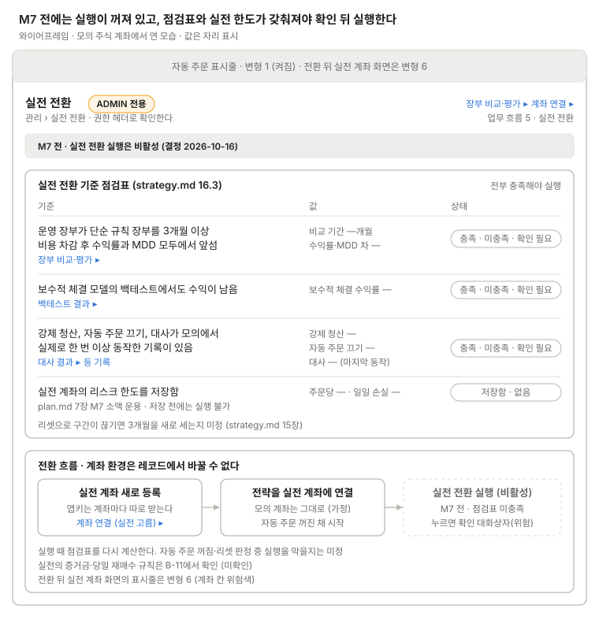

실전 전환
ADMIN 전용 실전 모드 전환과 실전 전환 기준 점검표(strategy.md 16.3).

실전 계좌를 새로 등록하고 전략을 연결한 뒤, 점검표 세 항목과 실전 계좌의 리스크 한도 저장이 모두 충족돼야 실행 버튼이 켜진다. M7 전에는 비활성이고(결정 2026-10-16), 실행은 확인 대화상자(위험)를 거친다.
점검표 행마다 값을 나눠 보이고(비교 기간·수익률·MDD 차, 보수적 체결 수익률, 세 동작의 마지막 일시) 근거 화면(장부 비교·평가, 백테스트 결과, 대사 결과)으로 가는 링크를 둔다. 흐름 순서는 실전 계좌 등록 → 전략 연결 → 실행이고, 제목 줄에 장부 비교·평가에서 들어오는 링크를 둔다. 전환 뒤 실전 계좌 화면의 표시줄은 변형 6이다.
쓰는 공통 UI
화면 틀 · 자동 주문 표시줄 (변형 1, 6) · 확인 대화상자 (실전 전환 M7)
상태
| 상태 | 보일 것 |
|---|---|
| ADMIN 아님 | 메뉴와 화면 숨김, Spring도 권한 헤더로 거부 |
| M7 전 | "M7 전" 띠, 실행 비활성 |
| 불러오는 중 | 점검표 값 자리 표시, 실행 비활성 |
| 데이터 부족 | 해당 행 "확인 필요"와 모자란 데이터 |
| 점검표 미충족 | 미충족 행과 무엇이 모자라는지 한 줄 |
| 실전 계좌 미등록 | 흐름 첫 상자에 "계좌 연결 (실전 고름) ▸" |
| 실전 계좌 토큰 실패 | 첫 상자에 토큰 상태(유효·만료·실패)와 계좌 연결 링크 |
| 실전 한도 미저장 | 4행 "없음", 실행 막음 |
| 전환 진행 중 | 실행 버튼 잠금 |
| 전환 실패 | 오류 문구, 실전 계좌 자동 주문은 꺼진 채 |
| 이미 실전 운용 중 | 실전 운용 상태와 표시줄 변형 6. 되돌리는 길은 미정 |
화면 규칙
- 주의: 계좌 환경은 레코드에서 바꿀 수 없으므로 실전 계좌를 새로 등록하는 흐름이다
- 미확인: 점검표 항목, 실전의 증거금·당일 재매수 규칙(B-11)